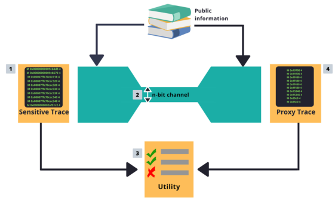
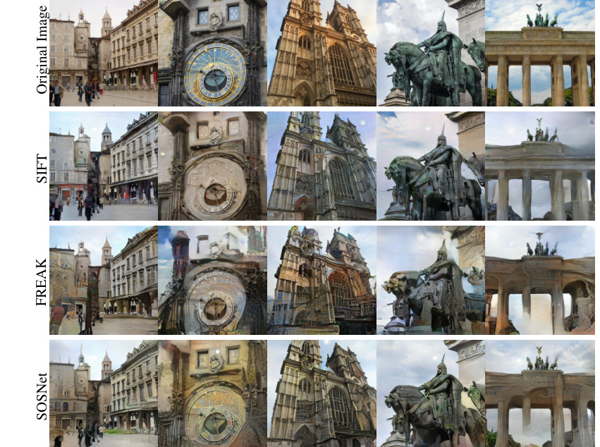
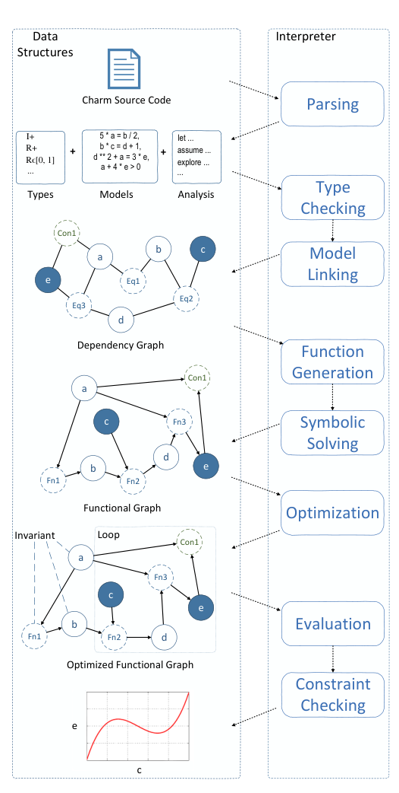

Research
🔬 Current Work
Compute verification
Compute verification asks whether a third party can check what a GPU has been running without trusted hardware. I am designing software-based protocols that combine memory-state challenges on high-bandwidth memory with subsampled zero-knowledge proofs, and I am building the security argument that bounds the undeclared workload an operator can run while still passing verification.
Training-time safety monitoring
This project asks whether a fine-tuning job that removes a model’s safety training can be detected while it is still running. The monitor runs below the privilege level of the party running the job and is outside that party’s control.
Constraint drift through delegation hierarchies
When an orchestrator agent delegates work to sub-agents, the constraints it was given can weaken along the way. This project measures that loss across constraint types and delegation depths, and tests whether constraints lose force partly because delegation strips them of their system-level status, not only because their wording changes.
📚 Earlier Work
Trace wringing: privacy for program traces
Hardware designers need program traces from real workloads, but traces leak what the program was doing. Trace wringing forces a trace through a channel of only a few thousand bits, so the amount of information shared is bounded, while keeping the memory behavior that matters for performance evaluation. My dissertation built this into a system-level framework for privacy.
- Safer Program Behavior Sharing through Trace Wringing. ASPLOS 2019.
- Trace Wringing for Program Trace Privacy. IEEE Micro Top Picks 2020.
- Context-Aware Privacy-Optimizing Address Tracing. SEED 2021.
- A System-level Framework for Privacy. PhD dissertation, 2022.

Security and privacy for extended reality
Augmented reality devices send image features and other sensor data to services. We showed that sparse local feature descriptors can be reverse engineered into recognizable images, set up a privacy threat model for feature sharing, and studied mitigations and their cost to localization. Later work strengthened the attack with diffusion priors. Alongside this, the SoK maps where hardware, software, and cryptography can be co-designed for secure computing, and Porcupine is a synthesizing compiler for vectorized homomorphic encryption.
- Mitigating Reverse Engineering Attacks on Local Feature Descriptors. BMVC 2021.
- Unlocking Visual Secrets: Inverting Features with Diffusion Priors for Image Reconstruction. TMLR 2025.
- SoK: Opportunities for Software-Hardware-Security Codesign for Next Generation Secure Computing. HASP 2020.
- Porcupine: A Synthesizing Compiler for Vectorized Homomorphic Encryption. PLDI 2021.

Agile hardware design and architecture modeling
PyRTL is a hardware description language embedded in Python, built for rapid prototyping, instrumentation, and teaching. Charm is a language for closed-form, high-level architecture modeling that lets designers state models and constraints and explore a design space symbolically. I also led the development of OpenTPU, an open-source tensor processing unit written in PyRTL.
- A Pythonic Approach for Rapid Hardware Prototyping and Instrumentation. FPL 2017.
- Agile Hardware Development and Instrumentation with PyRTL. IEEE Micro 2020.
- Charm: A Language for Closed-form High-level Architecture Modeling. ISCA 2018.
- Language Support for Navigating Architecture Design in Closed Form. JETC 2019.
- PyRTLMatrix. EMC2 2019. PyRTL in Early Undergraduate Research. WCAE 2019.
- Code: PyRTL, Charm, OpenTPU
